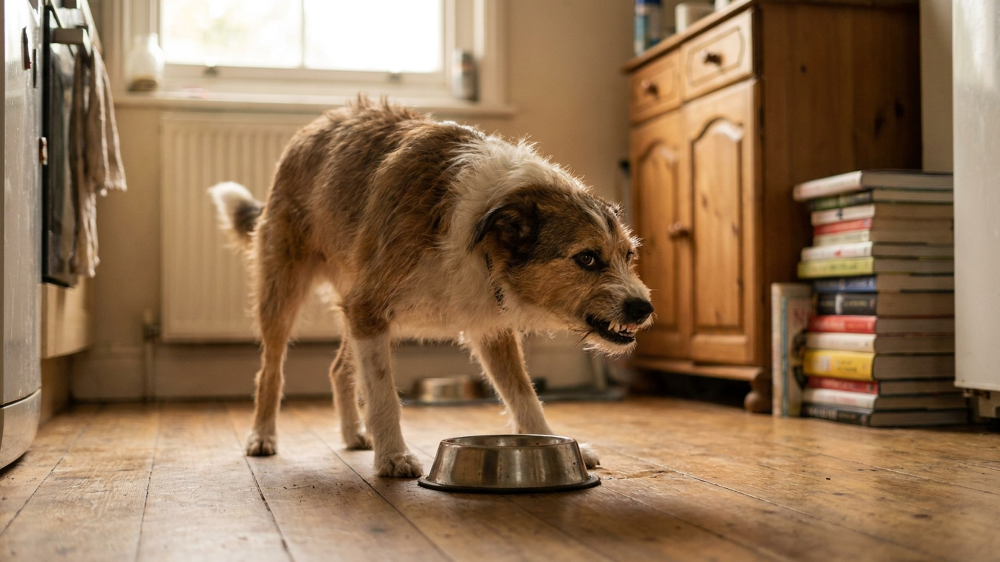

Собака рычит у миски и охраняет игрушку: ресурсная агрессия и как её снизить

6 июня 2026 · 9 минут чтения · Поведение · Воспитание · Собаки
Собака рычит, когда вы подходите к её миске. Или не даёт забрать кость, прижимает игрушку и скалится. Это называется охраной ресурса — один из самых распространённых поведенческих паттернов у собак. Понять его природу — первый шаг к тому, чтобы безопасно снизить интенсивность.
Что такое охрана ресурса
Охрана ресурса (resource guarding) — это эволюционно обоснованное поведение. В дикой природе животное, которое не охраняет свою добычу, её лишается. Собака охраняет еду, игрушки, место, иногда — человека, которого считает «своим».
Важно понять: это не доминирование, не «проверка хозяина», не агрессивный характер. Это страх потери чего-то ценного. Собака сигнализирует: «не подходи, это моё».
Рычание — это коммуникация. Собака, которая рычит, предупреждает. Собака, у которой подавили рычание наказанием, может укусить без предупреждения — потому что «мягкий» сигнал у неё убрали.
Шкала интенсивности охраны
Охрана ресурса бывает разной интенсивности:
- Слабая: собака напрягается, ест быстрее, оглядывается при вашем приближении.
- Средняя: рычит, но не движется, прекращает, когда вы отходите.
- Высокая: рычит с напором, показывает зубы, принимает стойку.
- Выраженная: бросается, кусает при приближении к ресурсу.
Слабую и среднюю интенсивность хозяин может снижать самостоятельно. При высокой и выраженной — обратитесь к профессиональному кинологу, работающему позитивными методами.
Что точно нельзя делать
- Наказывать за рычание: это убирает предупредительный сигнал, не убирает страх. Ситуация становится опаснее.
- Забирать ресурс силой: конфронтация усиливает охрану, создаёт негативную ассоциацию с вашим присутствием.
- «Тренировать доминирование»: устаревшая идея, которая противоречит современным данным о поведении собак и создаёт больше конфликтов, чем решает.
- Игнорировать: охрана ресурса без работы над ней, как правило, со временем усиливается.
Метод «торговля» — базовая техника
Цель — научить собаку, что ваше приближение к ресурсу предвещает что-то хорошее, а не угрозу потери.
- Пока собака ест или держит игрушку — подходите и бросайте рядом кусочек чего-то вкусного (не в миску, рядом). Подошли → упало угощение → ушли. Повторяйте.
- Собака начала реагировать на ваше приближение спокойно — теперь подходите и кладите угощение в миску, пока она ест. Снова уходите.
- Со временем ваше присутствие рядом с ресурсом будет предсказывать «что-то хорошее», а не угрозу.
- С игрушками: команда «дай» с обменом на угощение. Собака отдаёт — получает вкусняшку — игрушка возвращается. Это ломает логику «отдал — потерял».
🐾 Питомец ведёт себя странно?
AnimaLife расшифрует поведение кошки и собаки и подскажет, что делать. Попробуйте бесплатно прямо в мессенджере.
Открыть в Telegram → Открыть в MAX →
Практические меры для снижения напряжения
- Кормите собаку отдельно от других животных и в спокойном месте — не там, где ходят люди во время еды.
- Уберите «конкурентные» ресурсы — кости, жевалки, особо ценные игрушки на время работы над поведением. Меньше поводов для охраны — меньше упражнений в этом поведении.
- Кормите несколько небольших порций вместо одной большой — собака меньше «накапливает» ценность миски.
- Учите команду «оставь» в спокойной обстановке, без высокоценных ресурсов, с постепенным усложнением.
- Все члены семьи работают по одной схеме. Если один из домашних подкрепляет охрану (уходит при рычании, не реагирует) — прогресс будет медленнее.
Дети и ресурсная агрессия
Это отдельная тема. Дети не умеют читать сигналы собаки и часто «нарушают пространство» непредсказуемо. Если у вас есть дети и собака проявляет охрану — не оставляйте их вместе без присмотра взрослого, пока поведение не стабилизировано. Это не строгость, это безопасность.
Охрана ресурса у щенков: важность раннего начала
Если у вас щенок — не ждите, пока проблема станет очевидной. Формировать правильное отношение к ресурсам нужно с первых недель жизни в доме.
- Регулярно подходите к щенку во время еды и добавляйте что-то вкусное в миску — закрепляйте: «человек рядом с миской = хорошо».
- Учите команду «дай» с момента, как щенок что-то начал носить в зубах.
- Практикуйте обмен: забираете предмет, даёте угощение, возвращаете предмет. Щенок понимает: «отдать — не потерять».
- Если щенок уже рычит у миски — это сигнал для немедленной работы, а не «само пройдёт с возрастом».
Охрана пространства и «своего» человека
Некоторые собаки охраняют не только еду и игрушки, но и место (любимое кресло, кровать) или человека — рычат, когда кто-то подходит к «их» хозяину.
Принцип работы тот же: ваше появление рядом с «ресурсом» предвещает что-то хорошее, а не угрозу. Если собака охраняет место на диване — постепенно учите команду «место» с собственным лежаком, чередуйте доступ и запрет на «человеческую мебель» по вашему выбору, не по требованию собаки.
Когда обращаться к специалисту
Охрана ресурса при правильной работе снижается. Но есть ситуации, когда самостоятельно лучше не действовать:
- Собака уже кусала за приближение к ресурсу.
- Охрана распространяется на людей (рычит при приближении чужих к «своему» человеку).
- Поведение появилось резко и без видимой причины — иногда за изменением поведения стоит физический дискомфорт, обсудите со своим ветеринаром.
- Охрана нарастает, несмотря на работу.
Работа с охраной ресурса требует терпения, но при правильном подходе большинство собак значительно улучшается. Главное — не усиливать проблему наказаниями и не игнорировать её в надежде, что сама пройдёт.
Материал носит информационный характер и не заменяет очную консультацию ветеринара.
← Все статьи · Открыть AnimaLife в Telegram · RSS